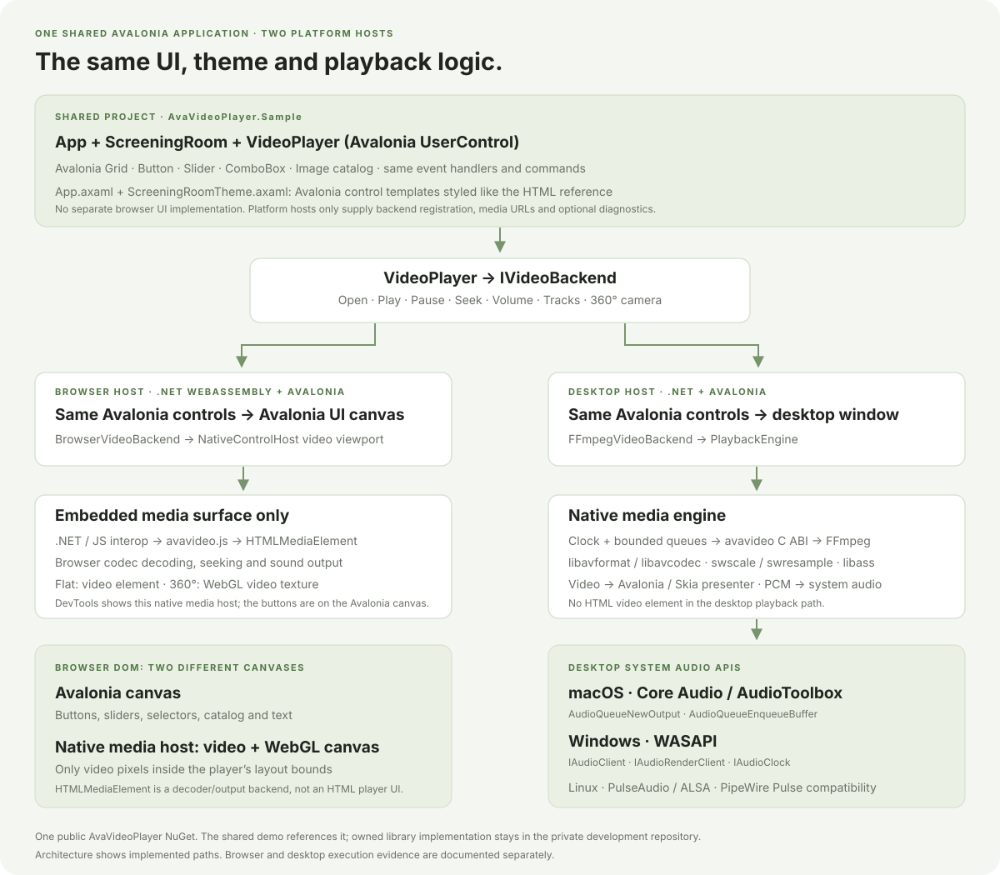

API reference

Public types and declared members from the exact packaged assemblies.
Expand a namespace and type in the tree to browse properties, methods, events and constructors. Search finds both guides and API members. Signatures are generated from metadata; optional parameters are displayed as = default, not as a promise of a particular semantic default.
AvaVideoPlayer
- IBrowserFilePicker interface · 2 members
- IVideoBackend interface · 14 members
- IVideoFramePresenter interface · 2 members
- IVideoOrbitInput interface · 1 members
- OrbitCamera struct · 19 members
- SubtitleCue class · 11 members
- SubtitleDocument class · 4 members
- VideoFramePresenter class · 6 members
- VideoPlayer class · 34 members
- VideoPlayerPlatform class · 1 members
- VideoPresentationOptions class · 10 members
- MediaAttachment class · 13 members
- MediaChapter class · 12 members
- MediaInformation class · 19 members
- MediaTrack class · 23 members
- MediaTrackDisposition enum · 7 members
- MediaTrackKind enum · 3 members
- PlaybackCapabilities class · 22 members
- PlaybackSnapshot class · 19 members
- PlaybackState enum · 10 members
- StereoLayout enum · 3 members
- VideoProjection enum · 3 members
AvaVideoPlayer.Browser
- BrowserVideoBackend class · 20 members
AvaVideoPlayer.Engine
- AudioInterruptionReason enum · 3 members
- AudioOutputFormat struct · 10 members
- AudioOutputInterruptionEventArgs class · 4 members
- AudioOutputPolicy enum · 3 members
- AudioOutputUnavailableException class · 1 members
- AudioPlaybackPosition struct · 15 members
- AudioTimelineNormalizer class · 2 members
- BoundedFrameQueue<TFrame> class · 7 members
- DecodedAudioFrame class · 6 members
- DecodedFrameKind enum · 3 members
- DecodedMediaFrame class · 6 members
- DecodedPixelFormat enum · 1 members
- DecodedSubtitleFrame class · 14 members
- DecodedVideoFrame class · 9 members
- DecoderOptions class · 20 members
- FrameQueueSnapshot struct · 12 members
- IAudioFrameProcessor interface · 2 members
- IAudioOutput interface · 12 members
- IAudioOutputNotifications interface · 2 members
- IAudioProcessorFactory interface · 1 members
- IDecoderFactory interface · 1 members
- IDecoderSession interface · 10 members
- ISubtitleWindowReader interface · 3 members
- ISubtitleWindowReaderFactory interface · 2 members
- IVideoFrameSource interface · 2 members
- MediaBuffer class · 6 members
- MediaDecodeException class · 2 members
- PlaybackClock class · 11 members
- PlaybackDiagnostics struct · 22 members
- PlaybackEngine class · 18 members
- PlaybackOptions class · 15 members
- SubtitleFrameLease class · 5 members
- SubtitleFrameStore class · 5 members
- SubtitlePayloadKind enum · 4 members
- SubtitleTimeline class · 7 members
- SubtitleTiming class · 1 members
- VideoDecodeDiagnostics class · 16 members
- VideoDecodePath enum · 3 members
- VideoDisplayGeometry class · 16 members
- VideoDisplayLayout struct · 21 members
- VideoFrameLease class · 4 members
- VideoFrameStore class · 6 members
AvaVideoPlayer.FFmpeg
- AssSubtitleRenderer class · 8 members
- FFmpegAudioProcessorFactory class · 2 members
- FFmpegDecoderFactory class · 3 members
AvaVideoPlayer.FFmpeg.Avalonia
- FFmpegVideoBackend class · 18 members
AvaVideoPlayer.NativeRuntime
- NativeLibraryResolver class · 2 members
AvaVideoPlayer.Platforms
- AudioOutputException class · 1 members
- NativeAudioOutput class · 13 members
AvaVideoPlayer.Rendering.Skia
- SkiaVideoPresenter class · 5 members
- VideoRenderDiagnostics class · 12 members